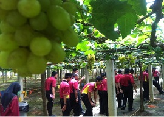

|
Anugerah Koperasi - Anugerah Koperasi Cemerlang Negeri Perak Tahun 2006. - Johan Kuiz Koperasi Peringkat Negeri Tahun 2005 & 2006. - Mendapat tempat ke 9 antara koperasi sekolah peringkat kebangsaan 2012 |
Project Koperasi 1. Project Koperasi Tanah 2. Project Koperasi - Agen BSN |
New Product


RECENT ACTIVITY
-
Visit to Kedah
study tour to Kedah


Shortly about us
Sekolah Menengah Sains Teluk Intan or SEMESTI (Teluk Intan Science School) is one of the fully residential school that was built on 1980. This school is located 13 miles from the Teluk Intan town and has an area of 21.5 hectare. Students start enrolling into this school on 1984